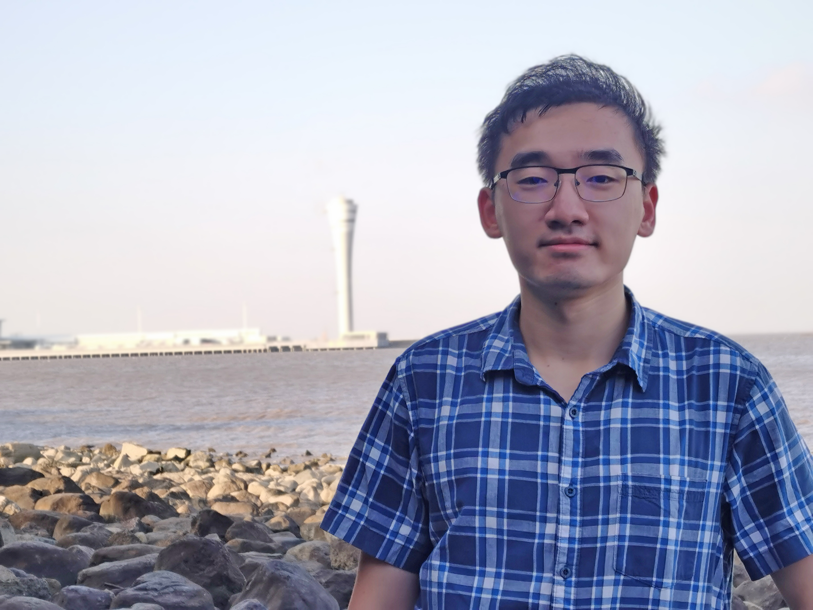

I am a computer science Ph.D. student at ShanghaiTech University, supervised by Prof. Ye Shi (石野). My research centers on Embodied AI — particularly world action models and reinforcement post-training for building agents that perceive, plan, and act in complex environments.
Open to collaboration, discussion, and good questions about Embodied AI, world models, and RL post-training.
panbk2023 (at) shanghaitech (dot) edu (dot) cn